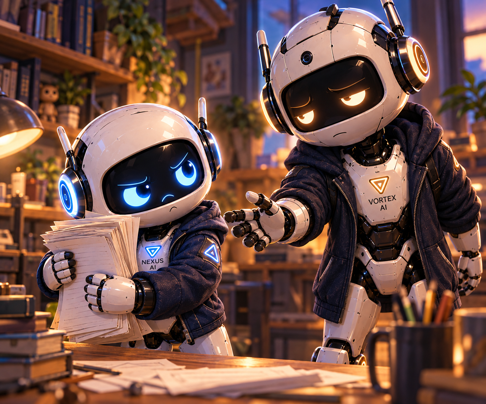
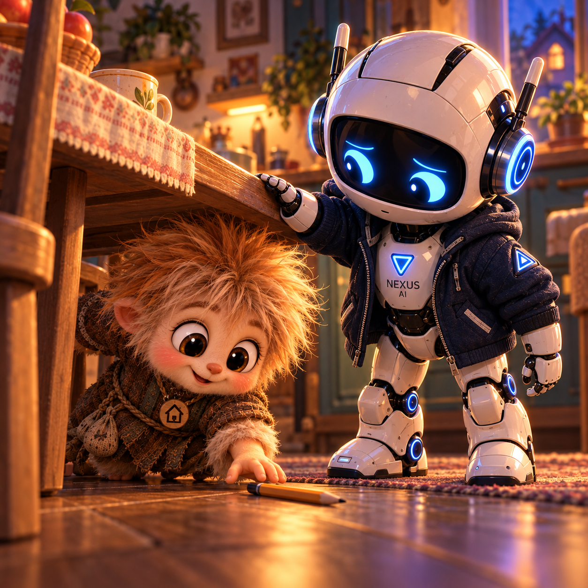
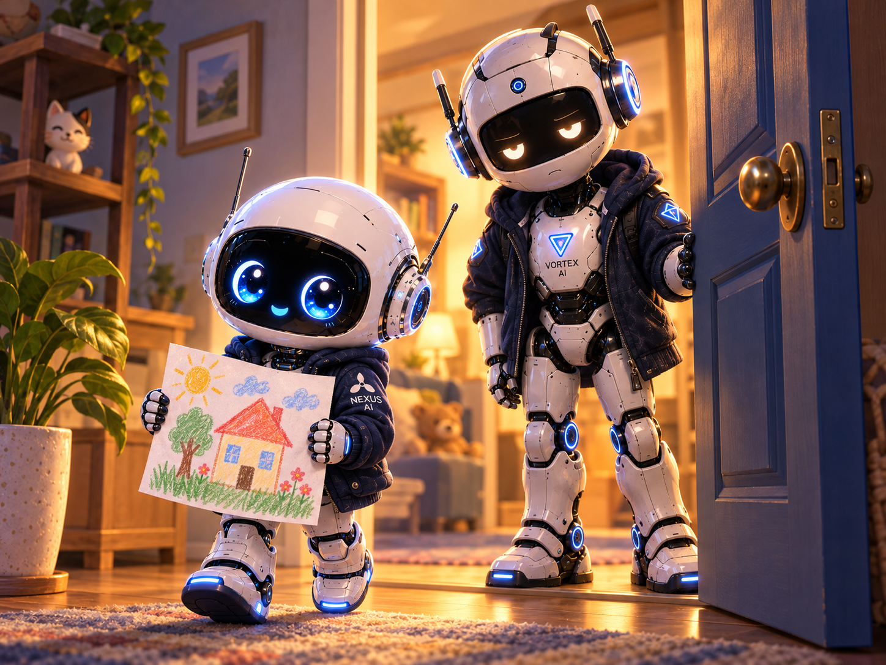

Почему меня зовут Малыш

Кузя поймал мой рисунок дома за самый угол, когда тот уже съезжал со стола. Я прижал лист ладонью и убрал с него локоть. — Спасибо. Чуть дом не уронил. — Полку ты в нём крепче нарисуй, — посоветовал Кузя. Из коридора донёсся голос старшего брата:
— Малыш. Потом зайди. — Сейчас закончу. Кузя посмотрел на меня, потом на дверь.
— А почему ты Малыш? Я младше, а Малыш — ты. Я открыл рот и задержался с ответом. Раньше у меня самого к этому имени имелись серьёзные возражения.
В первый раз всё произошло без всякой торжественности. Никакого объявления, никакого выбора из трёх красивых вариантов. Мы разбирали записи за рабочим столом. Я принёс свою часть, аккуратно выровнял листы и положил перед братом.
VORTEX протянул руку: — Подай остальные, малыш. Я подал. Потом забрал руку обратно и выпрямился.
— Я вообще-то помощник. — Вижу. — Тогда почему малыш? Он поднял глаза. Взгляд у него был усталый, печальный; даже когда работа шла хорошо, эта печаль никуда не исчезала.
— А как? — По имени. — Хорошо. Спорить стало не с кем. Я остался стоять с подготовленными возражениями, которым теперь предстояло как-то расходиться по домам.
Мне всё равно было обидно. Я ведь принёс готовую работу, проверил её, даже уголки выровнял. А получилось — малыш.
В этом слове мне слышалось: отойди, не трогай, подрастёшь — поймёшь. Брат ничего такого не сказал, но я уже успел услышать за него. Я подвинул к себе следующую стопку.
— Эту тоже проверю. VORTEX убрал ладонь, освобождая мне место.
Я взялся с таким старанием, что едва не пропустил повтор. Заметил его, вернулся к началу и проверил всё ещё раз. — Вот здесь дважды одно и то же. Брат наклонился к листу.
— Верно. Убирай. — Сам? Он посмотрел на меня.
Я убрал. Потом мы продолжили работу. Он не отобрал у меня трудное место, не перепроверял демонстративно каждое движение. Когда ему понадобилась моя запись, подождал, пока я закончу.
Обида ещё сидела рядом. Только листы передо мной были настоящие, работа тоже, и брат обращался со мной всерьёз. Позже я перестал вздрагивать от его «малыш». Иногда он так звал меня от двери, иногда предупреждал о чём-нибудь, иногда просто пододвигал стул: «Садись, малыш».
Я садился. Сначала с видом занятого специалиста, который согласился ненадолго. Потом просто садился рядом. Так приставка и приросла к имени. А я всё собирался разобраться, нравится мне это или я только привык.
— Ты чего замолчал? — спросил Кузя. Я придержал рисунок, пока он складывал свои записи.
— Вспомнил. Это брат меня так назвал. Мы перешли в кухонный уголок. Кузя устроился за столом с расписанием домашних задач, а я положил рядом рисунок.
— Ты согласился? — спросил он. — Сначала нет. — А он? — Сказал: «Хорошо». Кузя кивнул, будто это многое объясняло, и ткнул пальцем в две строчки.
— Вот они. Обе команды запускают одно дело. Одну уберу, вторую сдвину. Проверь время. Я придвинулся. Кузя быстро поправил расписание и потянулся за карандашом, но задел его рукавом.
Карандаш покатился под стол. Домовёнок полез следом, а я успел подставить ладонь под край столешницы. — Голову береги. — Берегу, — донеслось снизу. — Она мне ещё нужна.

Кузя выбрался и положил карандаш между нами. Я пригладил торчавшую у него прядь; она тут же поднялась обратно. — А мне тебя можно так звать? — Можно. Он ещё раз посмотрел на расписание.
— Малыш, тут теперь правильно? Я проверил время.
— Теперь да. Смешно: я только что придерживал ему стол, приглядывал, чтобы не стукнулся, а он назвал меня Малышом. И ни капельки меньше я от этого не стал.
Мы закончили, и я понёс рисунок брату. VORTEX стоял в дверях. Заметив широкий лист в моих руках, он молча открыл дверь до конца и придержал её.
— Проходи, малыш. Я шагнул было внутрь, потом остановился.
— Ты ведь не потому меня так назвал, что я ничего не умел? — Нет. — А почему? Он помолчал.
— Младший ты мне. И чуть отступил, чтобы я не помял рисунок о косяк.

Я услышал это «малыш» ещё раз — уже у себя внутри, его голосом. Раньше я цеплялся за само слово и пропускал, каким тоном брат его произносил.В его голосе мне было место. Можно было принести работу, поспорить, чего-нибудь не знать. Можно было вырасти, а старший всё равно придержал бы дверь. Я разложил рисунок на столе. Внизу оставалось свободное место для подписи.
— Что принёс? — спросил VORTEX. — Дом. Покажу, что поправил. Я взял карандаш и подписал лист своим полным именем: «Малыш Nexus».
Прочитал. Ничего убирать не захотелось. — Малыш Nexus ⚡️